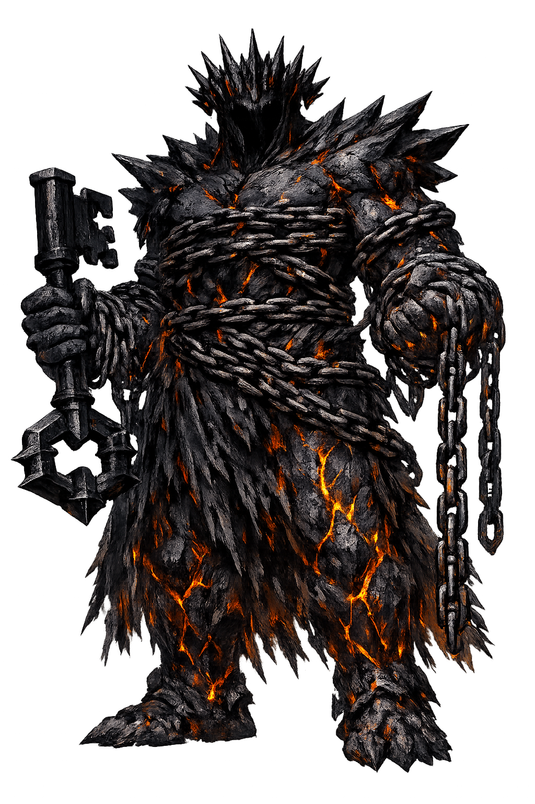

Ancient Domain
Tártaros is the deepest place. It lies beneath Hades as far as Hades lies beneath the earth, and the earth beneath the sky. It is not merely a dungeon; it is a cosmic depth, the inverted dome that balances the celestial dome above.
Extended Lore
Etymology · Phonology · Orthography · Cultural Legacy · Primary Sources

Essential information about Tártaros, The Primordial Abyss
From original script to Unicode restoration
Tártaros is Tier 2 because the Greek Τάρταρος preserves only stress (acute on the first alpha), not length. The first syllable carries the pitch peak, appropriate for a name that denotes the deepest point of the cosmos. The absence of long vowels makes the name sound hard and abrupt — the acoustic opposite of the bright, sustained Aithḗr.
Character-by-character philological analysis
| Character | Unicode | Name | Block | Phonetic Role |
|---|---|---|---|---|
| T | U+0054 | Latin Capital Letter T | Basic Latin | Tau |
| á | U+00E1 | Latin Small Letter A with Acute | Latin-1 Supplement | Acute on alpha |
| r | U+0072 | Latin Small Letter R | Basic Latin | Rho |
| t | U+0074 | Latin Small Letter T | Basic Latin | Tau |
| a | U+0061 | Latin Small Letter A | Basic Latin | Alpha |
| r | U+0072 | Latin Small Letter R | Basic Latin | Rho |
| o | U+006F | Latin Small Letter O | Basic Latin | Omicron |
| s | U+0073 | Latin Small Letter S | Basic Latin | Sigma |
The Tier 2 classification reflects which ancient features stress, length, or script are preserved in this restoration.
From ancient cult to modern Unicode
Tártaros is the deepest place. It lies beneath Hades as far as Hades lies beneath the earth, and the earth beneath the sky. It is not merely a dungeon; it is a cosmic depth, the inverted dome that balances the celestial dome above.
The Romans transliterated the name directly as Tartarus and made it the lowest region of the underworld, a place of torment distinct from the neutral infernum. In Virgil's Aeneid, the wicked are judged and cast into Tartarus, while the blessed ascend to Elysium. Christian writers — above all Milton in Paradise Lost — adopted Tartarus as a name for Hell or its precinct, completing a transformation from cosmic depth to moral prison. The word remains in theological vocabulary as a synonym for the deepest place of punishment.
Tártaros survives as the archetype of the inescapable prison. Video games, fantasy novels, and comic books use "Tartarus" for the deepest dungeon, the final level, the place where ancient evils are chained. In astronomy, the exoplanet HD 80606 b was nicknamed "Tartarus" for its extreme, hellish orbit. The abyss also shaped psychology and literature: the "Tartarus" within is the unconscious depth where repressed forces rage. The name still carries its original weight: not merely death, but the bottom of everything.
Restoring Tártaros in a domain name is more than orthographic accuracy. It is a statement that the internet should recognize the full range of human writing — not only the ASCII keyboard.
Common questions about Tártaros, The Primordial Abyss, and Unicode restoration
In reconstructed pronunciation, Tártaros is /tár.ta.ros/ — approximately "TAR-ta-ross" — three syllables, the first pitched high like a stone dropping..
Tártaros means Deep place (from τάρταρος) in the greek tradition.
Tártaros is associated with Bronze anvil (Hesiod's measure of its depth: nine days' fall from earth), Iron gates (The impassable boundary), Triple night (The darkness that wraps the abyss), Storm winds (The imprisoned forces that issue from its depths), Fettered Titan (The defeated gods chained below).
Plain ASCII tartaros strips the stress, length, and script that make the name specific. Unicode restoration returns the name to its original written dignity.
After Cháos and Gaia, Hesiod names Tártaros: "dim Tartarus, in the depths of the broad-pathed earth" (Theogony 119). It is both a place and a power, the body of the pit itself. Homer adds the famous measurement: Tártaros is as far beneath Hades as heaven is above earth (Iliad 8.13–16).
The philological foundations of this restoration
Every claim on this page is grounded in established scholarship. The orthographic restorations follow disciplinary convention. The etymological chain follows the best available reference works. This is not invention — it is resurrection through scholarship.
You have traced the name from its earliest attestation to its Unicode restoration. Now return to the myth. The story is where the name lives.
Back to Lore